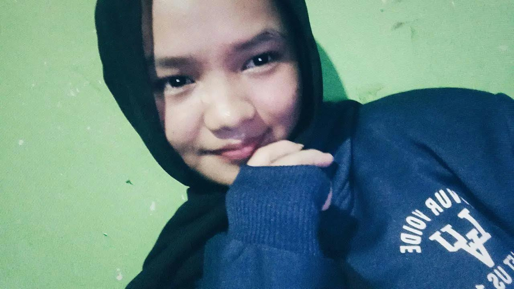
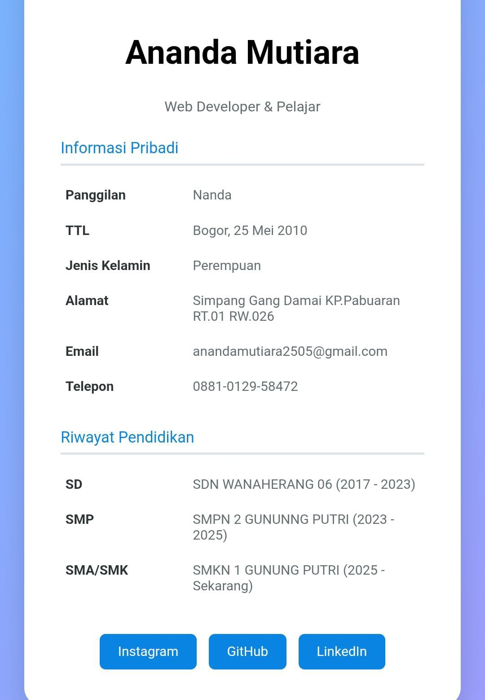
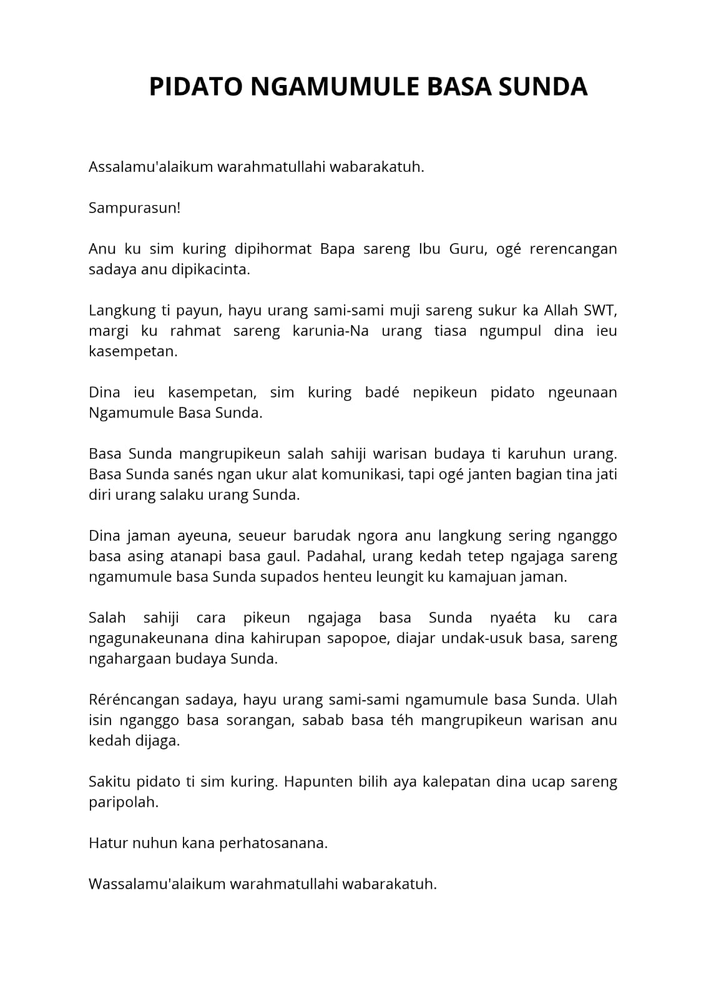
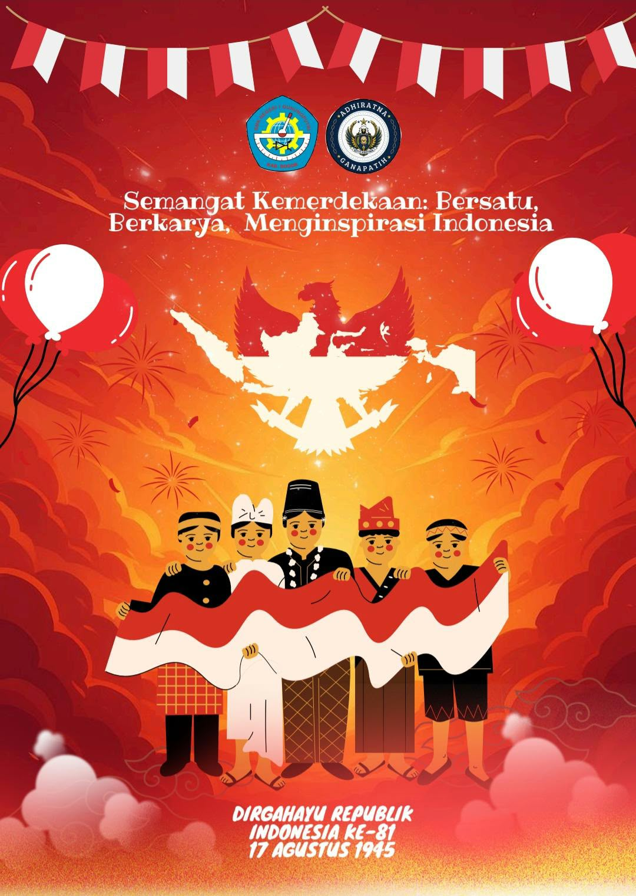

Halo, saya
Ananda Mutiara
Siswa kelas X yang suka belajar teknologi, membuat program kecil, dan mencoba hal baru.
Lihat portfolio
- Tempat, tanggal lahir
- Bogor, 25 Mei 2010
- Alamat
- Simpang Gang Damai KP.Pabuaran RT.01 RW.026
- Hobi
- Mendengar musik, dan Bermain game
- anandamutiara2505@email.com
Sekolah
SMKN 1 GUNUNG PUTRI
Jl. Barokah No. 06, Desa Wanaherang, Kecamatan Gunungputri, Kabupaten Bogor, Jawa Barat 16965, smk ini memiliki berbagai jurusan, fasilitas laboratorium komputer, ruang belajar, serta kegiatan ekstrakurikuler untuk mendukung kreativitas dan keterampilan siswa.
- Kelas: X PPLG 3
- NIS: 0102731847
- Wali kelas: Bu Novi Ch, S.Pd.
Kegiatan
- Ekstrakurikuler IT
Jadwal Pelajaran
| Jam | Senin | Selasa | Rabu | Kamis | Jumat |
|---|---|---|---|---|---|
| 07.15 – 07.55 | DKK | DKK | DKK | INF | DKK |
| 07.55 – 08.35 | DKK | DKK | DKK | INF | DKK |
| 08.35 – 09.15 | DKK | MPK | DKK | INF | DKK |
| 09.15 – 09.55 | DKK | MPK | DKK | BK | DKK |
| 09.55 – 10.10 | Istirahat | ||||
| 10.10 – 10.50 | DKK | INF | DKK | IPAS | DKK |
| 10.50 – 11.30 | DKK | INF | DKK | IPAS | DKK |
| 11.30 – 12.10 | APEL | IPAS | DKK | IPAS | DKK |
| 12.10 – 13.00 | Istirahat | ||||
| 13.00 – 13.40 | APEL | IPAS | DKK | IPAS | DKK |
| 13.40 – 14.20 | JEP | IPAS | MPK | IPAS | |
| 14.20 – 15.00 | JEP | IPAS | MPK | IPAS | |
Portfolio

Website Profil Sederhana
Halaman profil pribadi dengan HTML dan CSS.
HTML CSS
Pidato Bahasa Sunda
Pidato sunda pentingnya melestarikan bahasa kita.
Karya Sastra
Poster Hari Kemerdekaan
Desain poster untuk lomba.
DesainKlik dimana aja buat nutup ✕
Materi
Favoritku ✨
| 🌶️ Seblak Original | Makanan |
| 🍲 Mie kuah/goreng | Makanan |
| 🍫 Minuman Coklat | Minuman |
| ☕ Kopi Americano | Minuman |